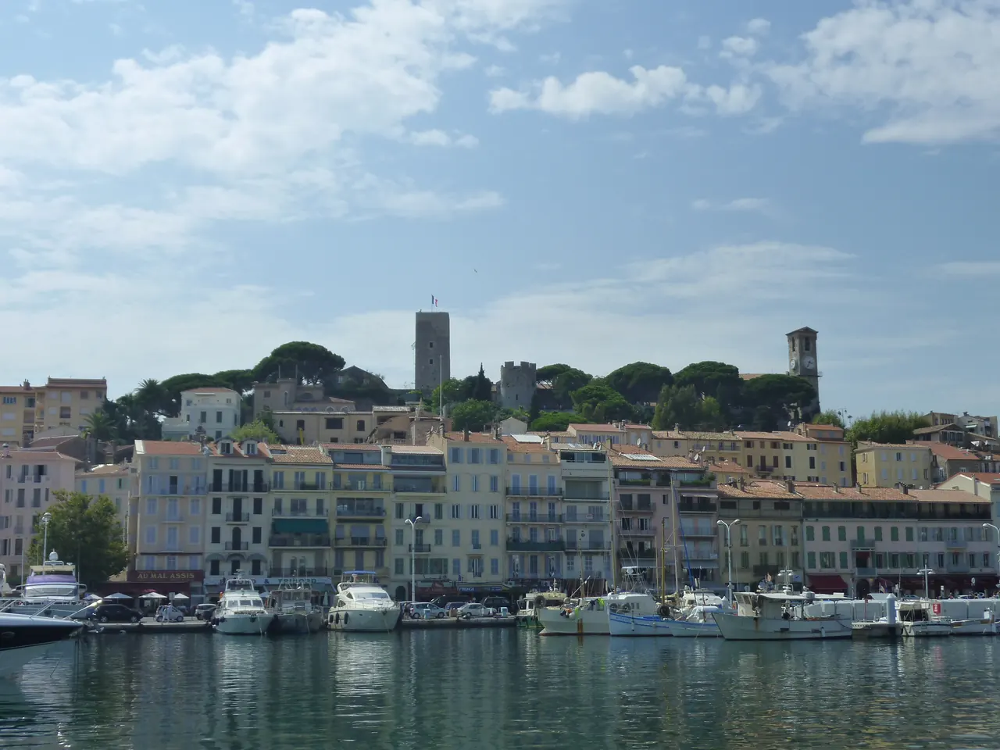

{kind=link}
기본표현 P0
Où sont les toilettes ?
화장실은 어디입니까?
우 송 레 투알레트

칸 기차역에서 출발해 포르빌 시장, 11세기 르 쉬케 어촌 언덕, 구항구를 지나 영화제의 상징 크루아제트 대로로 이어지는 칸 핵심 도보 코스.
영화제의 현대적인 화려함을 목격하기 전, 칸의 소박하고 역사 깊은 옛 어촌 지형과 재래시장을 체계적으로 연결하는 도보 코스다.
칸의 두 얼굴인 '소박한 옛 어촌'과 '화려한 영화 도시'를 가장 효율적으로 잇는 75분 코스다. 기차역에서 하차하여 시장의 활기와 언덕의 조망을 먼저 본 뒤 해변 대로로 나아가는 순서가 칸의 입체적 매력을 극대화한다.
| 운영시간 | 포르빌 시장 화~일 07:00~13:00 / 쉬케 박물관 9월 화~일 10:00~13:00·14:00~18:00(입장 마감 30분 전) / 크루아제트 산책로는 시간 제한 없음 |
|---|---|
| 휴무 | 도보 코스 자체는 공공 도로로 연중 개방 |
| 예약 | 예약 불필요 — 공공 도로·시장 자유 입장 |
| 메모 | 구간별 휴무가 있다 — 마르셰 포르빌 9/1~6/30 월요일 휴장 · 르 쉬케 정상 박물관 9월 월요일 휴관 |
| 항목 | 상세 정보 |
|---|---|
| 출발 지점 | Gare de Cannes (칸 기차역) |
| 종착 지점 | Boulevard de la Croisette (크루아제트 해변) |
| 비용 | 전 구간 무료 (Free) |
| 팁 | 칸 역 출발 시 포르빌 시장까지 도보 5분 소요 |
Où sont les toilettes ?
화장실은 어디입니까?
우 송 레 투알레트
C'est loin ?
먼가요?
세 루앵
On peut prendre des photos ?
사진 찍어도 되나요?
옹 푀 프랑드르 데 포토

국제영화제의 상징 크루아제트 대로와 호화 요트 항구, 그리고 11세기 중세 어촌의 원형 르 쉬케 언덕이 공존하는 코트다쥐르의 영화 도시.

해발 92m 바위 절벽 위에서 천사의 만(Baie des Anges)과 구시가지, 림피아 항구를 360도 파노라마로 굽어보는 니스 최고의 천연 전망 공원.

지중해 꽃과 프로방스 제철 식재료, 그리고 갓 구워낸 니스 전통 소카(Socca)를 맛보는 유서 깊은 야외 시장 광장.

지중해로 60m 솟아오른 천연 바위 절벽 위에 조성된 모나코 대공국의 역사적 심장부이자 왕궁 마을.

크루아제트의 화려함 뒤에 숨겨진 11세기 옛 어촌의 가파른 돌계단 골목과 정상 성당에서 바라보는 칸 만의 파노라마.

칸 주민들의 부엌이자 지중해 해산물, 프로방스 과일, 꽃, 치즈가 가득한 1934년 유서 깊은 철골 재래시장.